Two live systems that never stop growing
A live game's shop and events are never finished — new skins, discounted bundles, seasonal gift packs and fresh campaigns ship constantly. The design couldn't be a fixed set of screens; it had to be components that scale: one shelf that holds three items or thirty, one item card that carries every state, one price slot that accepts any currency, and one event template that reskins per campaign.
The events side had a specific trigger: event types had grown past what the old layout could clearly hold. The brief was to restructure the activity center so players could actually find and join what was live. So the shop had to stay browsable as the catalogue grew, and the events hub had to make daily return feel worth it — then route players back to spend.
"Every new item, currency and campaign shouldn't need a new layout — the shelf, the card and the event should already know how to hold it."
A featured page, four shelves, one item card
The Shop opens on the 推荐页 (Featured page): a collapsible event banner up top, a featured-item carousel with a live character preview, a 超级礼包 (super gift pack) shelf, and an 活动引导 (event guide) that links straight into the events hub. Below it, four category shelves — 小光仔 (creatures), 人类装扮 (avatar outfits), 上衣/裤子 (tops, bottoms), 道具 (props) — all reuse the same grid.
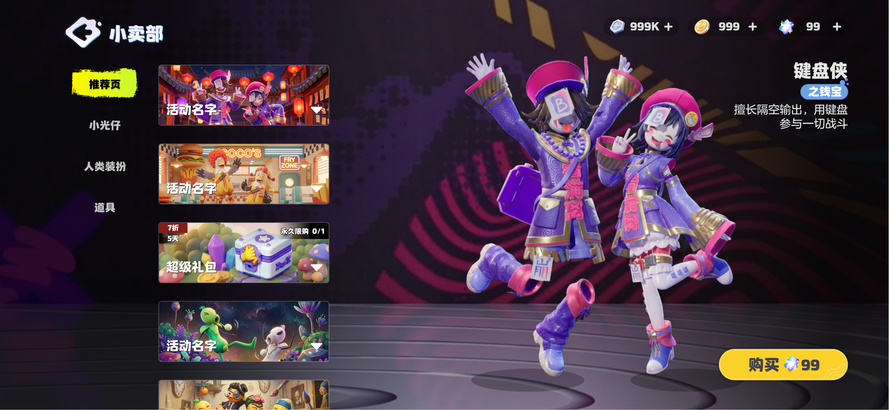
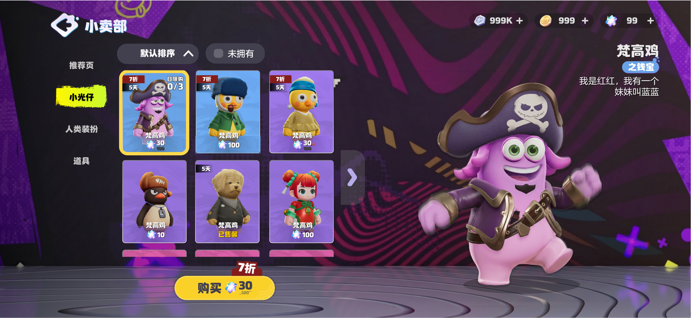
Every item rides the same card, which flips through states without changing layout: 默认 (default), 折扣 (discount — e.g. 7折 / 5-day timer), 已解锁 (unlocked), 已启用 (equipped), 免费购买 (free), plus purchase caps like 永久限购 0/1 and 日限购 0/3.
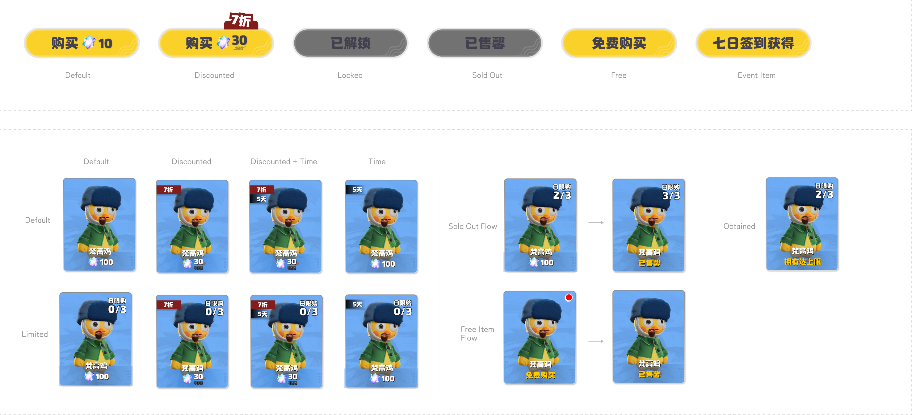
Sort, filter, expand — and pay in any currency
As shelves fill up, browsing has to stay fast. The Shop lets players change the sort order (e.g. by price), toggle 仅显示未拥有 (show only unowned) to hunt for what's missing, handle the 全部拥有 (all-owned) empty state gracefully, and expand the grid (展开界面) to show more items on screen at once instead of endless scrolling.
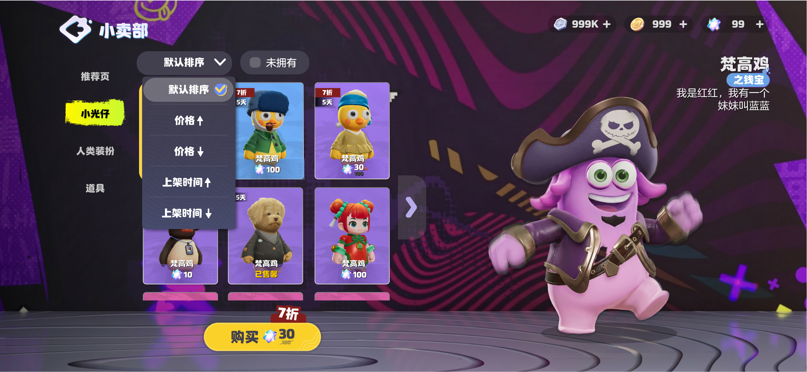
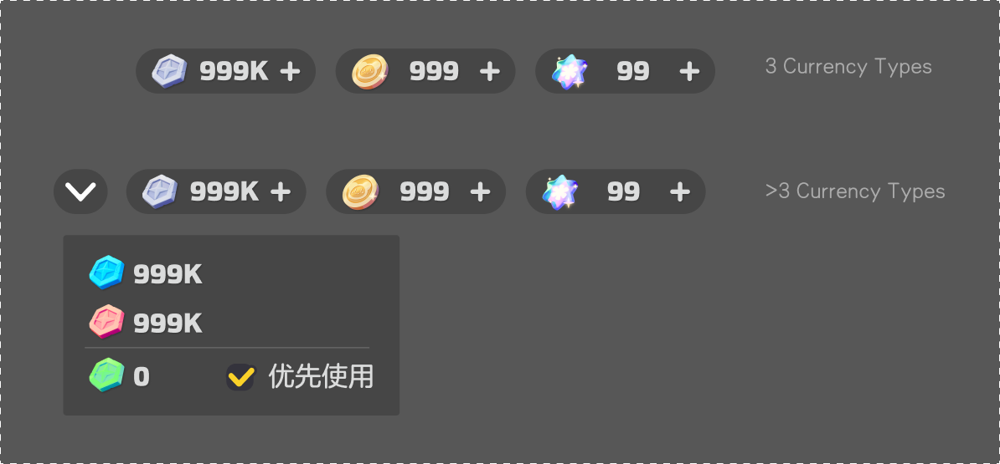
The economy runs on several currencies at once — gems, coins, star currency, event tokens. Rather than crowd the header, the top bar shows the essentials and expands via a chevron to reveal every balance, with a 优先使用 (priority-use) option so players control which currency spends first. Any shelf can price in whatever a campaign calls for.
A tight buy flow, and a chase made honest
The purchase flow is tight: tap buy → confirm (currency + quantity) → 获得道具 reveal → back to the shelf. Quick and legible whether it's a single sticker or a bundle.
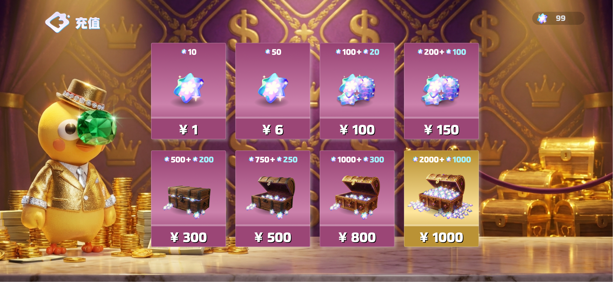
The 超级礼包 (super gift pack) is a chest players buy for a chance at rare items — the "maybe this one" pull that flat pricing can't create. Before buying, a 详情与概率 (details & probability) popup lays out exactly what's inside and the drop rates, so the chase stays exciting without feeling opaque. Buying runs the same confirm → reveal flow, ending on the item pulled.
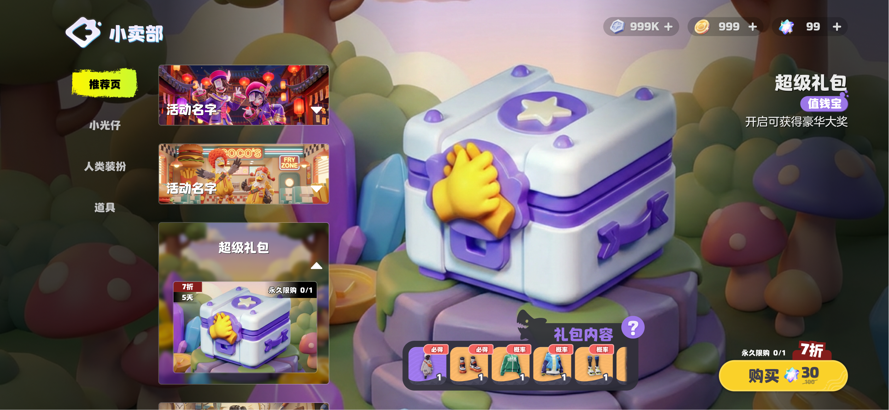
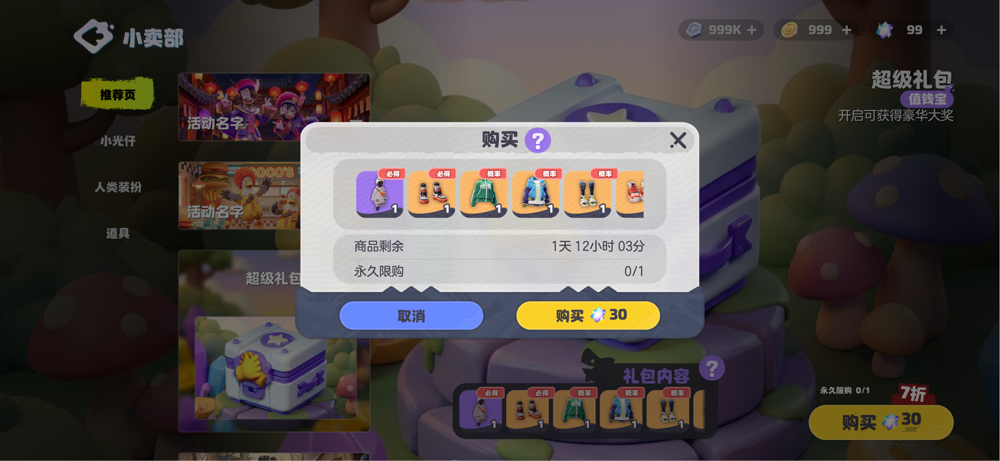
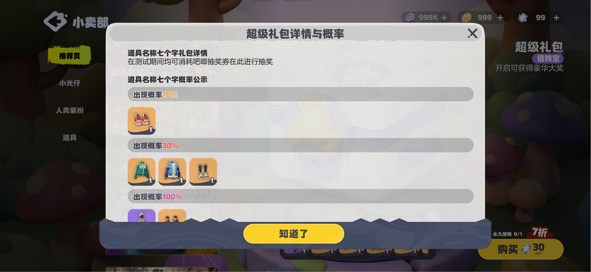
Restructured so players can find what's live
The activity center is reached from an entry button on the main screen, which shows a red-dot whenever there's a new event, an update, or an unclaimed reward. It lands on 奥星大事件 (Big Events) — a seasonal carousel (e.g. "S1初始赛季") where each card carries a 前往 (go-to) into the event.

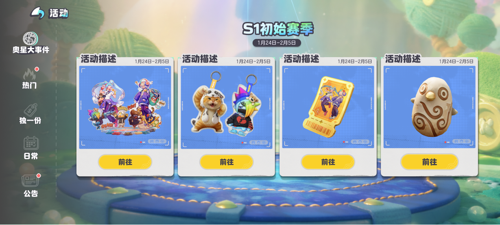
The core of the redesign is a two-level navigation. A left rail of primary tabs (一级页签, ≤5 chars) splits events by type — 热门 (Hot), 独一份 (Unique), 日常 (Daily, a world-map of recurring activities), 公告 (Announcements) — each carrying its own red-dot. Within a type, secondary tabs (二级页签, ≤6 chars) list the individual events, and completed events auto-sink to the bottom so what's actionable stays on top.
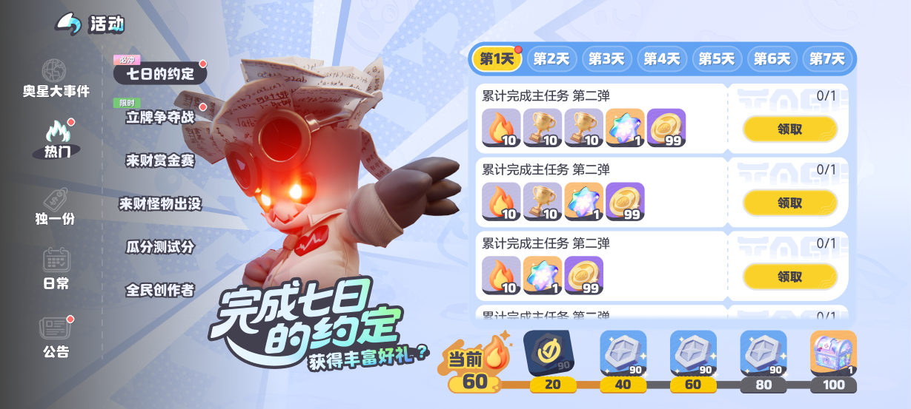
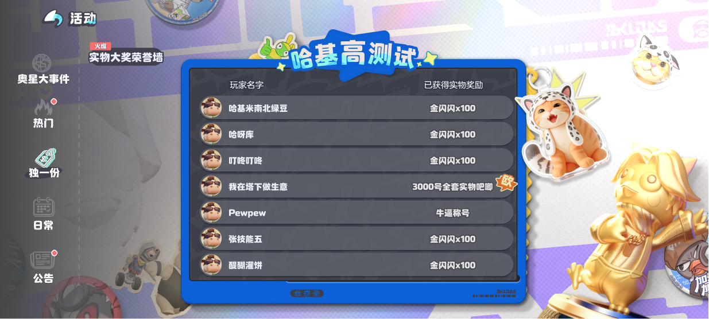
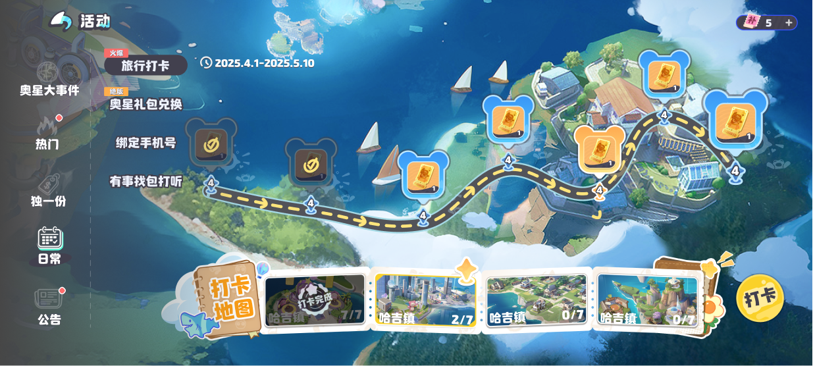
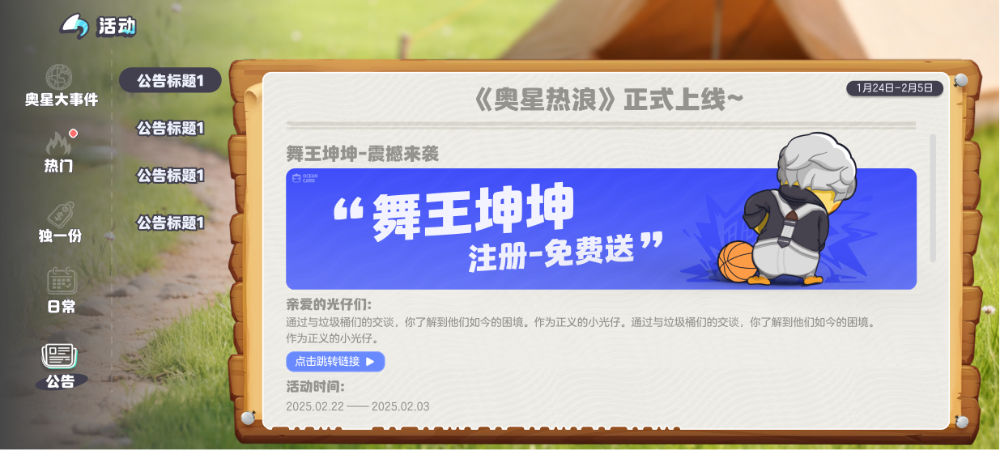
Secondary tabs carry their own status set — 默认 (default), 新 (new), 已完成 (completed) — plus configurable special tags (特殊状态) like 必才, 地图, 火爆, 限时 to flag what's important right now.
One frame, very different events inside
The strength of the frame is that wildly different events slot into it. The 七日的约定 (7-Day Pact) is the daily anchor: each day unlocks a set of tasks (join an open-world event, open 10 chests, play Rhythm Master), each with a 前往 (go-to) deep-link — often back into the Shop — feeding a cumulative milestone track. Finishing all seven days guarantees a 抽奖卷 (draw ticket), redeemable for physical merch.
By contrast, 立牌争夺战 (Standee Battle) is a competitive event — a leaderboard players climb with draws — while the 日常 (Daily) map holds the lighter, recurring activities. Same navigation, same red-dot and completion rules, very different play.

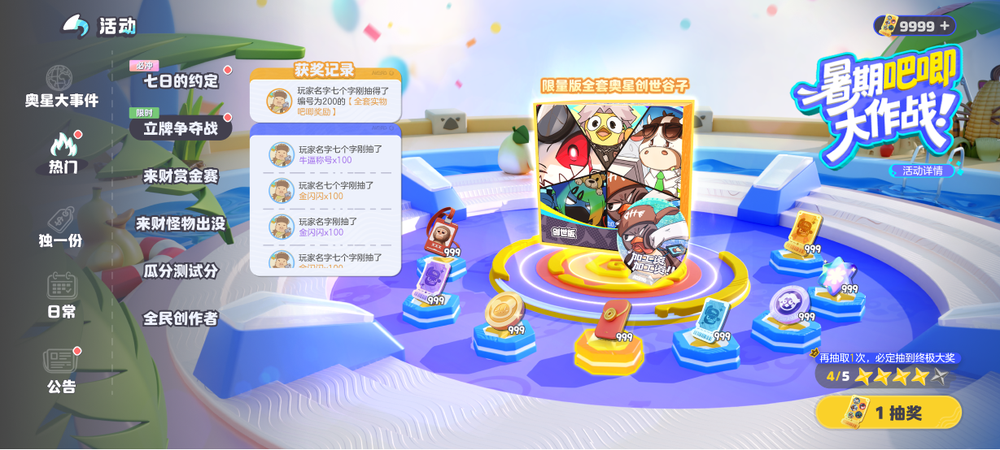
A shop and calendar the team runs without me
The result is a store and events layer the team keeps loading with new content without redesigning — new items drop onto the same shelf, new campaigns reuse the same event templates.
One item card carries every state — default, discount, unlocked, equipped, free, and purchase-limited — with no new layout
Sort, an "unowned only" filter, and an expandable grid keep a growing catalogue browsable
An expandable multi-currency bar with priority-use lets any shelf sell in gems, coins, or event tokens
Super gift packs pair rare-item pulls with a transparent probability screen — the chase stays honest
A two-level activity center with red-dot logic and auto-sinking completed events made a growing event list findable — and the 7-Day Pact's deep-links route players back into the Shop
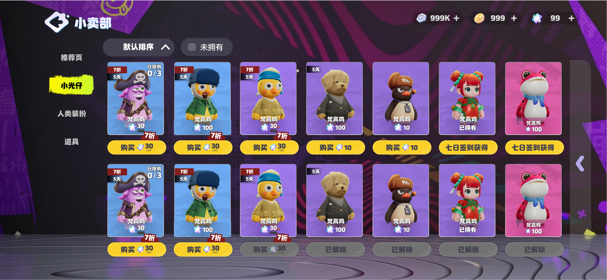